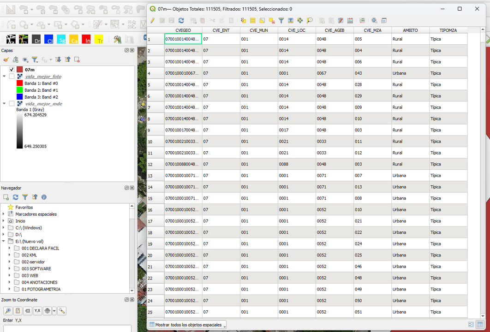
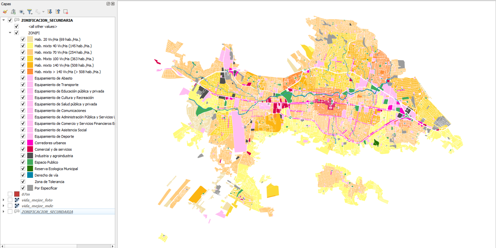
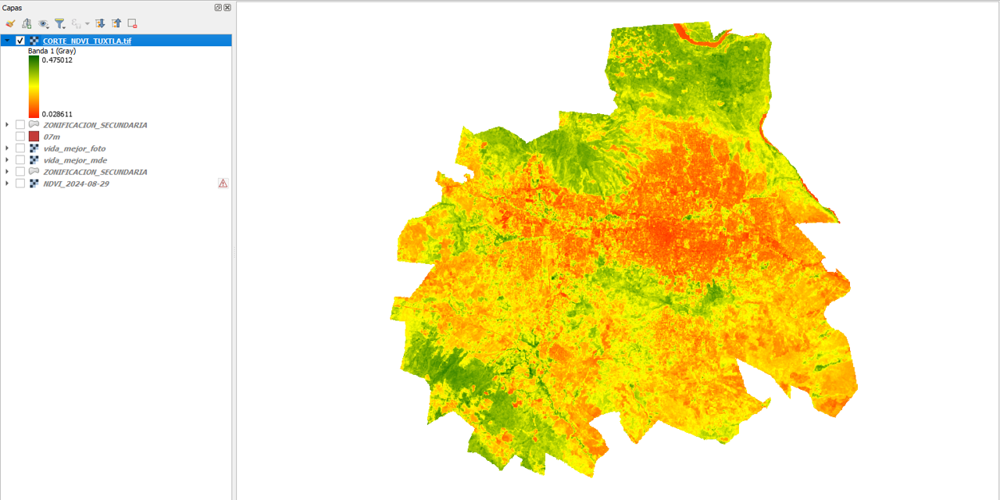

Transformación de datos abstractos en visualizaciones de ingeniería.
La geometría (puntos, líneas o polígonos) es solo la mitad de la historia. El verdadero valor para la ingeniería reside en la base de datos que respalda cada objeto espacial.
Al hacer clic derecho sobre una capa y seleccionar Abrir tabla de atributos, accedemos a la matriz de datos. Cada fila corresponde a un elemento en el mapa (ej. un tramo de tubería) y cada columna representa una variable (ej. diámetro, material, año de instalación).

Utilizamos este tipo de simbología cuando queremos diferenciar elementos del mapa basándonos en datos cualitativos (texto o categorías sin orden numérico).
Es ideal para crear mapas de usos de suelo (comercial, residencial, industrial) o para clasificar infraestructuras por tipo de material (tuberías de PVC, PEAD, Acero). A cada categoría se le asigna un color distinto para facilitar su lectura rápida.

A diferencia de la categorizada, la simbología graduada se utiliza estrictamente para datos numéricos (cuantitativos), agrupándolos en rangos.
Esta herramienta es fundamental para generar mapas de análisis numéricos. Se aplica un gradiente de color (por ejemplo, de azul claro a azul oscuro) para representar intensidades, como la densidad de población en manzanas, rangos de elevación, o la capacidad de flujo en redes de agua potable.

Es hora de clasificar nuestros propios datos en el laboratorio.
Ir al Laboratorio de EjerciciosComprueba si puedes diferenciar cuándo usar cada tipo de simbología.